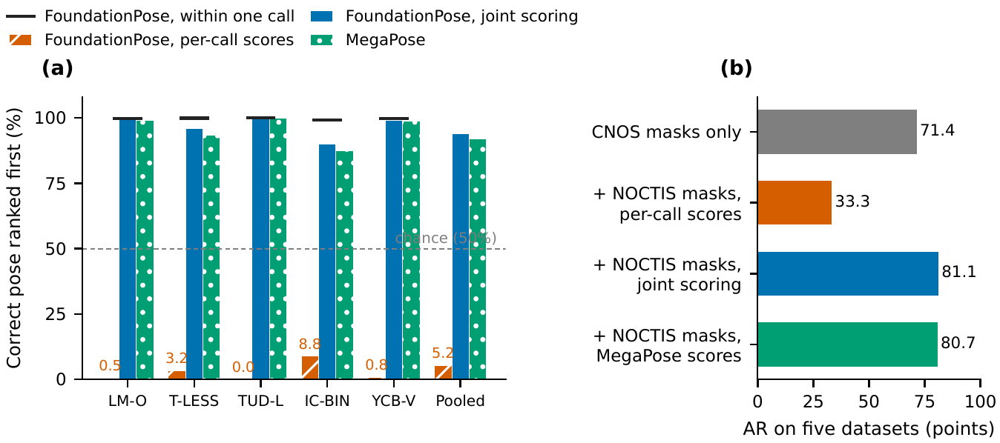
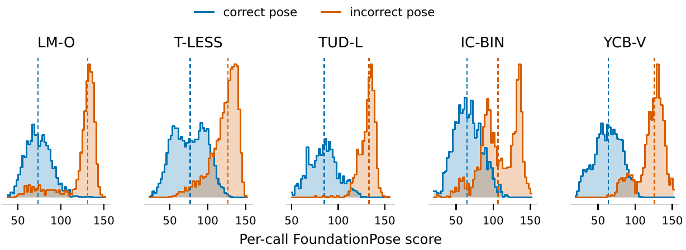
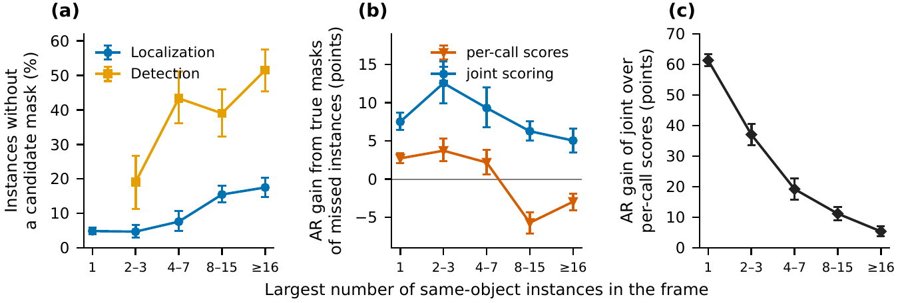
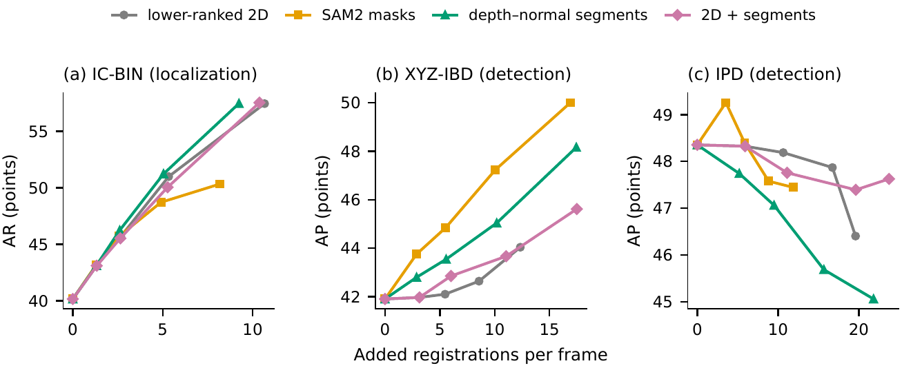
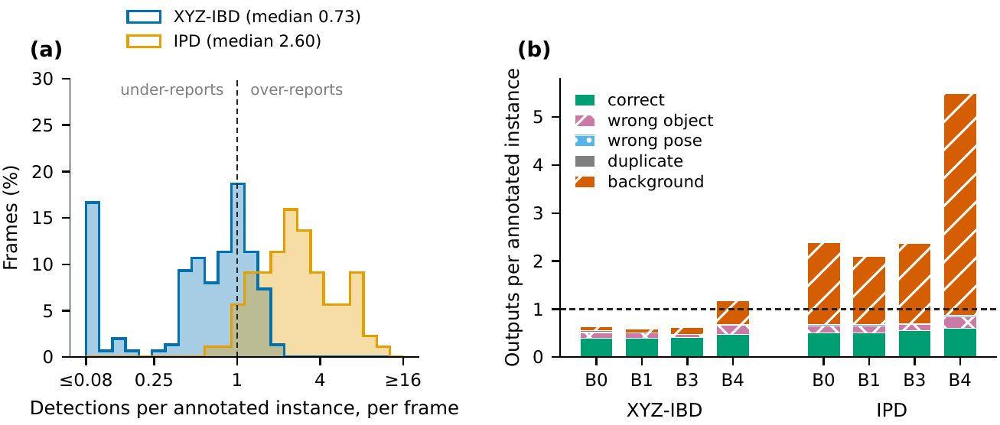

Abstract
Unseen-object 6D pose estimation recovers object poses from an RGB-D image and CAD models. Most pipelines register a pose per image mask and combine the outputs of separately trained models to decide which pose to keep, which masks to register and how many poses to output. For the FoundationPose scorer, these outputs are not comparable: ranked by the scores of separate calls, the best poses of different masks put the correct one first in 5% of correct–incorrect pairs, against 99% within one call. We call this cross-call rank inversion. Scoring an object's best poses in one call removes it, whereas per-call normalization only partly helps; until then, added masks return a third of their benefit or less. Counting from verified poses raises average precision by 9.1 points where the detector under-reports and lowers it by 5.6 where it over-reports. A pipeline following these rules reaches 0.844 average recall on BOP-Classic-Core, on par with the best entry.
Key numbers
Three decisions, one failure mode
- Which pose to keep. FoundationPose ranks hypotheses almost perfectly within one call (99.77%), but its scores are not comparable across calls. Scoring the best poses of a target jointly, or using a scorer that rates each pose on its own such as MegaPose, restores the ranking.
- Which masks to register. Instances that no proposal covers become more frequent as scenes grow denser, yet their recovery pays off fully only once poses are compared on a common scale.
- How many poses to output. Counting from verified poses helps where the detector under-reports and hurts where it over-reports; there, most of the added poses land on the background.
Results





Try it
The diagnostics run on a CPU with the Python standard library. They audit cached pose hypotheses, re-score fixed winners jointly through your own scorer, apply the B0–B4 output rules, and regenerate the paper's tables from the released result files.
git clone https://github.com/CrianeZRX/compare-before-you-combine cd compare-before-you-combine python -m pip install . compare6d audit examples/synthetic_calls.json compare6d replay data/paper_results.json --out build/results
Citation
@article{compare_before_you_combine,
title = {Compare Before You Combine: Cross-Call Rank Inversion in
Unseen-Object 6D Pose Estimation},
author = {Author names},
note = {Manuscript under review},
year = {2026}
}